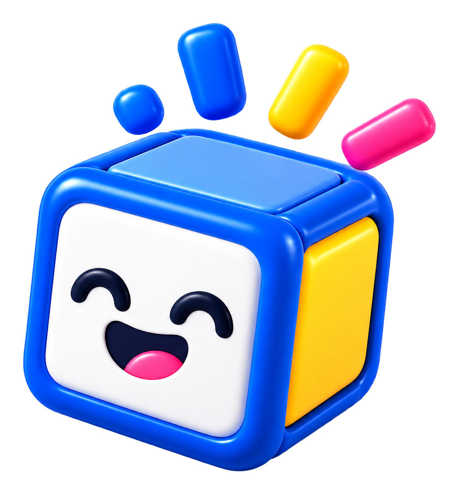

Reference (board, "Logo principal")
Code Happy: proposed brand assets vs reference
Review page for the proposed logo set in
src/assets/brand/logo/ and the processed mascot in
src/assets/brand/mascot/. Nothing here is used by the website. The left column
of each row is a crop of docs/design/code-happy-brand-reference.png; the right
column is the proposed SVG, drawn at the same height.
Provisional typeface. The wordmark is drawn with
Saira (SIL OFL 1.1), weight 800, width 125, chosen because it visually
matches the reference.
The original wordmark typeface has not been identified. The flat cube icon
is a hand-drawn approximation of the reference icon. The current SVGs in
src/assets/brand/ are unchanged.
Reference crops are low resolution (the board is 1536 × 1024 px); they blur when zoomed.
1. Variants beside the reference
Stacked: icon above the two-line wordmark
Proposed · code-happy-logo-stacked.svg
- Wordmark: "code" (navy) sits directly above "happy" (blue); the two lines nearly touch.
- "code" is about 0.73 of the width of "happy" on the reference; the proposal is 0.75.
- Pink bar: on the baseline right after the "y", about one sixth of the width of "happy".
- Icon size: the drawn cube and sparks are about 1.7 × the wordmark's height (about 1.75 × on the board; it was about 1.3 × in the previous iteration). The icon sits close above "code".
Horizontal: wordmark with the icon to its right
Reference (board, site header)
Proposed · code-happy-logo-horizontal.svg
- The icon is about 1.2 × the wordmark's height and vertically centred on it.
- Check the gap between the pink bar and the icon (the proposal uses 0.18 × wordmark height).
Icon only
Reference (board, favicon 180 × 180)
Proposed · code-happy-icon.svg
- Flat 2D cube: navy outline, white front face, yellow right side, light-blue top, thin blue frame. The cube is turned a little more than before, so the yellow side is wider (about 0.65 of the front face's width).
- Expression: rounded closed eyes (∩ ∩), set wider apart, and a small smile (∪) tucked between them, drawn as line art.
- Four rounded sparks above the top-right corner: blue dot, blue, yellow and pink strokes.
Dark-background version
Reference (board, "Versão para fundo escuro")
Proposed · code-happy-logo-on-dark.svg (on #111827)
- White wordmark, pink bar kept, full-colour icon. The SVG background is transparent.
- The icon's outline is white here, as on the reference, so the cube stays visible on navy. The face stays navy because it is drawn on the white front face.
- See section 2 for this version at small sizes.
Monochrome icon
Reference (board, "Versão monocromática")
Proposed · code-happy-icon-mono.svg
- Navy line art on white faces, with the same four sparks as the colour icon.
- Unconfirmed: the board's "Versão monocromática" tile is ambiguous. At its resolution it seems to show two or three sparks, but the intended spark count has not been confirmed. The proposal keeps four until it is.
2. Small sizes
16
32
48
horizontal 32 px
horizontal 44 px
stacked 96 px
on dark 24 px
on dark 32 px
on dark 56 px
3. Wordmark measurements
| Measure | Reference (measured on the stacked lockup) | Proposal |
|---|---|---|
| Case and lines | lowercase, "code" above "happy" | same |
| Width of "code" ÷ width of "happy" | ≈ 0.725 | 0.75 (follows from the typeface) |
| Line spacing | top of "happy" ascenders ≈ 0.06 × "happy" ink height below the "code" baseline | same value |
| Letter spacing | slightly tight | −0.02 em |
| Pink bar gap after "y" | ≈ 0.026 × width of "happy" | same value |
| Pink bar length | ≈ 0.157 × width of "happy" | same value |
| Pink bar thickness | ≈ 0.22 × "happy" ink height | same value, corners radius 0.32 × thickness |
| Pink bar position | top at ≈ 0.62 × "happy" ink height (sits on the baseline) | same value |
| Typeface | not identified | Saira 800 / width 125 (provisional) |
4. Colours and contrast
The proposed assets use the reference board's palette labels. The site's own design tokens are unchanged.
| Use in the proposed assets | Colour | Board label | Contrast on #FFFFFF | Contrast on #F9FAFB |
|---|---|---|---|---|
| "code", icon outline, mono icon | Texto | |||
| "happy", icon frame, spark | Primária | |||
| Pink bar, spark | Rosa | |||
| Cube side, spark | Amarelo | |||
| Cube top | none (45% white tint of #2563EB) |
The wordmark is large display text and a logo; WCAG contrast minimums do not apply to logotypes, but the values are shown to help judge legibility. The pink bar and the yellow face are decorative.
5. Mascot (processed copy, separate from the logo)
Open-mouth 3D version ("Feliz"). This is the 3D mascot with an open mouth
and a pink tongue, without arms. It is not the logo icon. Colours are unchanged from
docs/design/code-happy-mascot-3d.png; only the canvas was trimmed and
near-opaque alpha raised to 255. File:
src/assets/brand/mascot/code-happy-mascot.png (995 × 1071 px, transparent
background).
